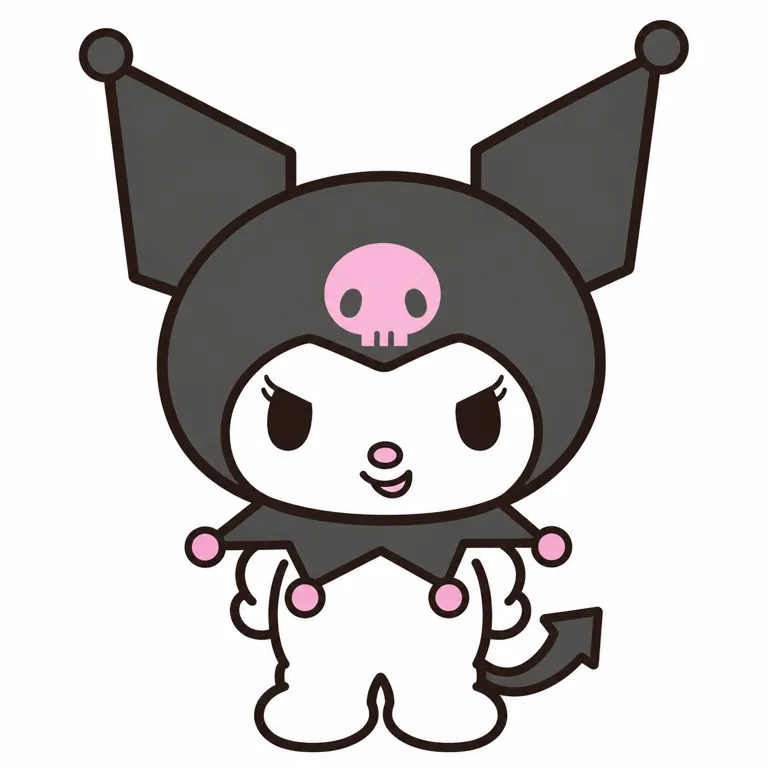

01
看起来强硬，心里仍有少女的一面
性格有反差，表情和内容才有继续发展的空间。
STANDARD STUDY / 2026.10.21
可爱，
也有自己的脾气。
尖锐的符号，圆润的自己。
从动画里的对手，到日常中的自我表达。

让柔软与主见在同一个角色里共存，
再让不同的人找到自己的拥有方式。
性格有反差，表情和内容才有继续发展的空间。
出道、生日、商品化与项目启动分别记。
| 时间 | 事件与边界 |
|---|---|
| 2005-03-02之前 | 涉案原始全身插画已完成；依据2026年一审判决回溯，不是全部早期草图的创作日。[A02] |
| 2005-04-03 | 《おねがいマイメロディ》播出；官网记出道年2005。[A01] [A02] |
| 2005年 | 2011年品牌公告回溯称同年商品化；首SKU与首价未知。[A04] |
| 2011-08-03 | ANNA×KUROMI童装合作公告，说明酷感服装联名早于近年翻红。[A04] |
| 2021-10-31 | 世界酷洛米化计划及Greedy Greedy MV启动。[A05] |
| 2023-02-17 | 官方独立动画项目KUROMI’S PRETTY JOURNEY公布。[A05] |
| 2025年 | 20周年，与美乐蒂50周年联动；Netflix新作7月24日上线。[A06] [A12] |
| 2025-10-09 | 日本Special Key设计系列上市，包含毛绒、包袋、日用与随机收藏品。[S01] |
| 2026-06-28 | 角色大赏综合第4名；票数不等于人数或销量。[A10] [A11] |
| 2026-09-18 | 创作与权利相关诉讼一审宣判，原告全部请求被驳回；上诉及终局状态未核。[A02] [A03] |
当前站姿、装饰插画、毛绒与异色收藏品交叉看。


原图引用原站URL，未随网页打包分发。三篇小红书的配图另作非官方介绍或用户实拍记录，未冒充官方标准图；缺标准侧背面。
五条轴与头像裁切，都回到所见样本。
| 轴 | 基础关系 | 变化与边界 |
|---|---|---|
| 原型／轮廓 | 小个子类人，大头小身，圆头配球尖突出物 | 2011官方未指定动物；V06毛绒可垂耳 |
| 记忆点位置 | 头巾、额前骷髅、白脸窗和眼型组合 | 蝴蝶结、皇冠、钥匙和衣裙是主题层 |
| 五官 | 基本图上挑实心眼、粉鼻、小笑嘴，无眉 | V03有高光和腮红，V05闭眼/星眼，V06小圆嘴 |
| 性格表达 | 圆与尖、强势眼型与小白身并置 | 可爱与酷不是只能二选一；不据脸作用户心理诊断 |
| 缩小／裁切 | 头像仍有球尖轮廓、骷髅与白脸关系 | 这是视觉观察，未做用户识别率、实体5cm或自动剪影测验 |
V01真实像素取样，只代表这张官方文件。
560×560的RGBA文件中，四个取样点均不透明。未做区域分割，不给色块百分比。图中是深灰而非屏幕纯黑；它依靠白脸与粉色小块形成明暗和面积关系。
V03紫色首先是画面环境；V05紫色头巾、金色或银色骷髅，V06紫色毛绒又显示颜色可以跨款变化。应看脸窗与标志的整体关系，不能把某一套配色提升为全部商品的绝对标准。
取样不是官方PANTONE、布料染色或塑胶验收色。基础图、主题图、实物和背景分开记录。
关系、主张、媒介、周年与日用品共同接力。
美乐蒂对手、巴库等关系让性格通过互动显现；日记与恋爱小说提供更柔软的一面。[A01]
2021世界酷洛米化计划把KUROMIES组织进角色表达；歌曲与独立动画增加新的接触方式。[A05]
本轮核查项目公告与设定，没有逐集观看动画、连续采集账号30天内容或比较播放中位数。不能据公告宣称某剧情、某首歌直接带来多少成交。
收藏、携带、日用与穿搭分别看；价格按地区和时间记录。
| 样本 | 作用／规格 | 价格与日期 |
|---|---|---|
| 2005商品化 | 官方2011回溯公告确认已商品化；首SKU、首价未知。[A04] | 未知 |
| VIS心形切口包／脸型小包 | 2025-01-09官方公告；包袋与小挂件不同任务。[A06] | 日本含税历史价7909／4389日元；1/10预售，1/24门店发售 |
| Special Key毛绒／托特包 | 周年装扮与钥匙主题，包可装A4或电脑的功能描述来自官方。[S01] | 2025-10-09日本含税公告：5500／3696日元 |
| Special Key发夹／镜子／贴纸 | 发夹2个、折叠镜和贴纸对应不同使用场景。[S01] | 日本历史含税价1298／2200／550日元 |
| 随机挂件／随机徽章 | 各自全8款，中身不可选；图V05展示两类。[S01] | 日本历史含税价990／792日元；不能混为16款一套 |
| 美国10英寸周年毛绒 | 约10英寸；刺绣、贴布、蕾丝与蝴蝶结。材料纤维全表未给。[S02] | 2026-10-21美国官网55美元；精确发售日未知 |
代表样本不等于销售冠军或完整产品目录。随机、限购与赠品是销售机制，不能仅凭页面存在就断言造成复购；不同市场价格不直接横比溢价。[S01]
官方角色大赏综合结果；保留抓取方式的限制。
2026角色大赏 · 综合
第4 名3,792,049票
名次由官方公告正文核对
酷洛米独立年度收入
未核得不以公司总收入
或投票份额分摊
| 年份 | 综合名次 | 酷洛米票数 | 证据 |
|---|---|---|---|
| 2023 | 第3名 | 3,566,050 | [A07] 正文 |
| 2024 | 第3名 | 4,125,678 | [A08] 官方结果索引 |
| 2025 | 第4名 | 3,652,492 | [A09] 官方结果索引 |
| 2026 | 第4名 | 3,792,049 | [A11] 官方结果索引 |
2026第4名另由官方发布会公告正文确认；2024—2026票数因结果页正文提取只见iframe，保留为官方索引口径。票数不是独立人数、购买人数或销售额；2025名次变化也不能证明销量下滑。[A10]
所阅公司材料包含自营、授权和跨角色项目，未取得能可靠归到酷洛米的独立年度收入。北美“培育为Hello Kitty之后第二号角色”是经营目标，不能写成已实现全球营收第二。[A12]
三个小红书账号加一组公开讨论，都是定向样本。
介绍笔记强调反差与自我表达，但混合了生日、年龄、物种和设计者信息。逐项核对后才能进入资料库。[X01]
联动合集整理25条线索，评论有人问邮政商品、餐厅地址，也有人看中包袋和奖牌。这是兴趣与找渠道，尚非成交。[X02]
用户实拍首图可见紫色主题货架、包袋与毛绒；评论询问地点和代买。也有人表示喜欢角色却不愿去该渠道。[X03]
Reddit讨论中，有人喜欢酷洛米造型包，却认为容量与价格不匹配；也有不喜欢具体设计的意见。同帖另有认可联名、实际买鞋并喜欢的回复，也有人说鞋实物比网上显得厚重。[A13]
无交易凭证、无代表性抽样，不推退坑率或联名失败率。小红书介绍只看1/6封面、合集看5/5、陈列只看1/12；已读正文和可见评论，未看页不算已读。
外壳、内核、两层参与与替代解释。
| 研究推断 | 依据 | 边界 |
|---|---|---|
| 外表强势与少女心形成可持续的性格张力。 | 官网自称对手、爱日记与恋爱小说；V01上挑眼型对圆白脸，V03眨眼与梳妆道具。[A01] | 角色可爱或强势并不自动证明消费者购买动机；不能把所有用户归为同一心理。 |
| 辨识组合相对稳定，风格与载体可以扩展。 | V01基本图、V03装饰插画、V04黑裙毛绒、V05紫色及金色小物、V06垂耳紫色周年毛绒。[A01] [S01] [S02] | 不能把黑头巾、粉骷髅、竖耳、纯黑眼全部视为任何SKU都不变；特例需保留。 |
| 角色主张、内容与跨品类日用共同增加接触机会。 | 世界酷洛米化计划、动画与音乐、周年活动；包袋、夹子、镜子、毛绒、挂件等。[A05] [A06] [A12] [S01] | 同时存在多种活动和三丽鸥渠道资源，无法把增长单因归给一首歌、短视频或一句话。 |
| 想拥有角色，也要通过价格与实用性的检验。 | 造型包的价格容量争议、联名鞋实穿反馈；小红书评论会问门店与购买渠道。[A13] [X02] [X03] | 评论不是交易凭证；少数反例不能证明整个联名或角色失败。 |
路人可先被黑粉配色、表情与某种商品实用性吸引，属于研究假设。
动画关系、日记与少女心、歌曲、周年和历代设计可成为长期参与入口。
黑粉、骷髅、尖耳、大头都属常见视觉语言；具体几何组合、关系角色和长期内容形成身份，不能用元素相同直接判抄袭。
目标锁定V01当前官网站姿；不拼接其他版本的特征。
以下是依据可见作品的研究重建，不是创作者原始提示词，不能证明原作品由AI制作。只有中文已测；纯文字能力与附图结果分开记录。
复制全文时请同时附V01官方原图。目标仅为此站姿；英文、原创及实物概念尚未验证。
将附图中的单角色忠实重建为白底二维平面插画。参考图是唯一身份、比例、轮廓、面部、姿态与配色依据。保留完整正面站姿、靠腰侧的两手、两只分开的圆脚、画面右侧向上弯的箭头尾巴。保持深灰宽圆头巾、白色短宽脸窗、左右外张而外边近竖直的扁三角耳、耳端小灰圆球、耳根台阶、中央粉色骷髅、四粉球尖领和很小的白色身体。细节全部以参考图为准：眼睛上沿明确向外上挑，下半为竖豆形实心，无眼白无高光；每只眼外角两根很短的睫毛，无眉；粉鼻子小而横扁，鼻下浅弧笑嘴向一侧开一点，露一小块粉色。白脸额头边缘是左右高、中间浅凹的曲线，脸颊圆润，下沿平宽。粉色骷髅不加外描边，无鼻洞无交叉骨，两颗小灰眼洞，下沿两条细灰缝。头巾和耳内均为均匀深灰，粗线条为深棕黑，粉色只出现在骷髅、鼻、嘴内与四个领尖圆球。使用和参考一致的粗细轮廓、圆角转折和纯色填充，无摄影、无体积、无阴影、无渐变、无噪点。不要美化重设计，不加腮红、额外睫毛、蝴蝶结、衣服、文字或标识。保留原图角色的轻微得意神情，不转成温顺圆眼或凶恶尖牙。 校准要求：轮廓线按参考图相对宽度，约为圆头宽度的四十五分之一，不能加粗成厚重黑框。小嘴再缩小，宽度约为白脸宽度的六分之一，口部上沿浅U弧、下方偏右的一点粉色；不要画成大张口。眼睛的外侧睫毛更细更短，眼睛下半部比现在常见圆眼更窄一些，完全按附图的高低倾角。保持图中耳尖球和头巾外张角度。真正平涂：头巾灰色、粉色骷髅和白身体均是均匀色值，不能出现任何光照渐变、纸纹或阴影；背景纯白。只遵照附图，勿以通用可爱画法改写。下载原词
研究者实际看图比较，未提供伪造相似度分数。ready仅为指定附图平面状态，不替代用户选择、全姿态母版或产品打样。
继续停在研究与指定站姿平面校准。
借鉴让柔软与主见并存，从新用户的具体处境写出动作和态度，不照搬角色关系。
可以研究尖与圆、强硬五官与柔和体块的张力；新角色重新选择原型、轮廓和五官，避开专属组合。
区分收藏、携带、穿搭和日用任务，让外形在具体功能中成立；优先测试造型包容量、价格和材料触感。当前只验证指定站姿平面。
截止2026-10-21；官方设定、判决、用户观点与推断各有边界。
Sanrio 三丽鸥 · 发布：未知／见边界
公司角色设定；生日不是现实创作日期；不能据网站页脚证明原始作者。 本轮已看官网主形象和两张设计画廊图，图像创作日期未核。
日本裁判所 · 发布：2026-09-18
一审判断，仅限涉案插画及请求；人格权不行使不是人格权转让；A/B匿名，不解匿名；上诉与是否确定未核实。
Sanrio 三丽鸥 · 发布：2026-09-18
公司声明未说明上诉或最终生效，不应补写。
Sanrio 三丽鸥 · 发布：2011-08-03
文件路径2022是上传信息；正文发布2011-08-03；不宜称官方固定物种为兔子。
Sanrio 三丽鸥 · 发布：未知／见边界
项目行动日期不等于角色诞生；当前主页数字没有逐项独立审计。
Sanrio 三丽鸥 · 发布：2025-01-09
计划公告证明宣布而非实际交付；不能证明销量。
Sanrio 三丽鸥 · 发布：未知／见边界
票数不是独立投票人数、购买人数或销售额。
Sanrio 三丽鸥 · 发布：未知／见边界
正文渲染只得iframe；官方2025预告PDF索引亦列相同表格。不是销量。
Sanrio 三丽鸥 · 发布：未知／见边界
官方2026预告PDF索引亦列相同表格；不可推定2025销量下降。
Sanrio 三丽鸥 · 发布：2026-06-28
全部角色票数绝不可归酷洛米；PDF表格作为图像未目检，单角色票数另见A11。
Sanrio 三丽鸥 · 发布：未知／见边界
本项数字来自官方页搜索索引；正文提取仅见iframe，访问范围受限。
Sanrio 三丽鸥 · 发布：2026-06-23
未在所阅内容找到可独立填入Kuromi的营收、全球零售额或授权费；公司收入、授权业务收入、联名终端零售额口径不同。公司作者原材料，检索可读镜像非公司域名。
Reddit r/sanrio 用户原帖 · 发布：2026-01-27
普通用户个体观点，不能推广为市场比例、退坑率或联名失败；此帖无可靠交易凭证。日期来自检索时间，正文相对时间抓取有变化。
Sanrio 日本 · 发布：2025-10-01
2025-10-09上市；价格为公告中的日本含税日元历史标价。已看毛绒与两种八款收藏品配图；未取得材料全表、销量或端盒概率。
Sanrio US · 发布：未知／见边界
商品871460；2026-10-21页面列55美元、约10英寸、刺绣及贴布细节。属于美国周年款，精确发售日未知；不是日本Special Key同一SKU。
小红书／每天认知一个品牌 · 发布：未知／见边界
正文、可见评论和封面1/6已读；页面显示03-10，年份未单独确认。笔记的生日年份、固定年龄、物种及创作者姓名不直接采信；配图原始授权与身份未核，不作为官方母版。
小红书／小埋又发现联名啦 · 发布：未知／见边界
正文、可见评论及5/5合集图已读；显示09-29，年份未单独确认。25条条目是账号整理，部分非酷洛米独立项目；未逐一核实授权与日期，不当全量官方清单。
小红书／一啖 · 发布：2025-12-05
正文、可见评论及图1/12已读。首图为用户店铺陈列实拍；地点为作者自报广州北京路，未独立核店铺身份与全店授权。评论为个案，不代表成交、质量率或总体画像。